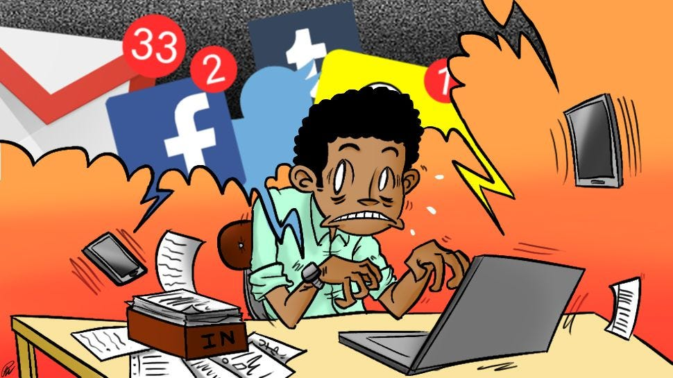

Conclusion
Overuse of screens among children can be both positive and negative to development. Although screens are helpful in enhancing learning and education, overuse affects cognitive development, executive functioning, sensorimotor skills, and school performance. Early exposure to screens is linked with reduced cognitive skills and poor school performance. Language development is also impaired because excessive screen use reduces interactive and meaningful caregiver input. Factors such as co viewing and content appropriateness influence the impact of screen time on language skills. Moreover, too much screen time can lead to issues like obesity, sleep disorders, depression, anxiety, and poor social-emotional development, including aggression and emotional intelligence. Parents also play a crucial role in regulating screen time through limiting, awareness, and using parental controls. Research shows that limiting screen time and not placing screens in bedrooms can reduce usage. Parents should also model appropriate screen use. Caregivers, teachers, and healthcare providers must be aware of the risks of excessive screen time and put in place measures that encourage healthier development, such as activities that support cognitive, language, and social emotional development in children.
